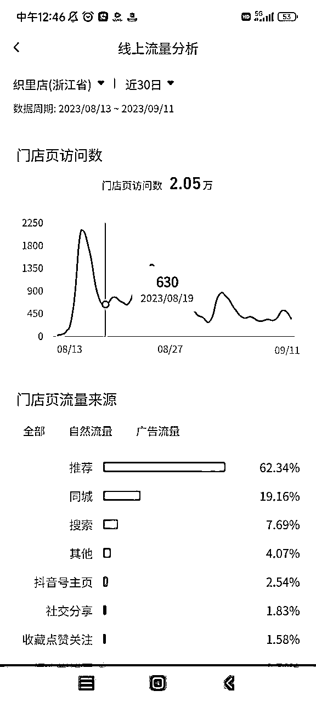

来源：https://jm9vdtdp0t.feishu.cn/docx/CCA0dHWzno36cMxi3LMcsZRonGf
好久不见，我是大周，目前在经营餐饮品牌小古拌拌麻辣烫麻辣拌。
今天分享的玩法，我自己是觉得非常的牛逼的，这个玩法是慢慢才完整起来的，这里要感谢涛哥、刺猬哥和聪哥，今年三月份涛哥来杭州玩，晚上带着我去刺猬哥的公司坐了坐。
那晚听刺猬哥和聪哥聊了一整晚的抖音本地生活，讲了很多流量逻辑，后面我开始尝试，过程中刺猬哥也一直给我很多建议，才有了今天我分享的这个完整的玩法。
所以我建议大家一定要多参与咱们生财的线下活动，多见面多聊天，全都是干货！
今天跟大家分享一下我们开店的常规爆店打法，我们现在能做到 2000 元左右的成本，获取 20 万 -100 万不等的播放量，一二线城市比较卷，播放量低，三四线城市的播放量很高。
大部分门店都能带来 2-5 万不等的抖音门店主页访问量 +2000 以上的抖音团购销量。
从三月份开始测试，到今天已经可以实现 80%以上的门店爆店率，就是说开一百家店，按照这套打法，我有信心能够有 80 家以上门店完成爆店。
这里指的爆店的标准：远超同商圈餐饮店的营业额，同商圈一天能卖 1000 的话，我们的门店至少能卖 3000 元。
比如这家店，在云剪爆店打法实施前：日均 500 左右的营业额，这是商圈正常水平，同商圈的店更差。
云剪爆店打法之后，日均营业额从 500 多飙升到 3000 块，直接变成当地最靓的仔。
第一个是地域商圈的内容供需关系。
第二个达人账号质量。
第三个就是内容质量。
云剪辑的爆店，就是通过爆款模板提升第三点内容质量的下限，降低内容生产成本。
当我们可以大批量，高质量，低成本的生产内容，我们就可以通过大量投放来测试达人质量，筛选高质量账号。
从而完成第二个点，达人账号的筛选。
同时我们小古拌拌现在更多在下沉市场开店，山西那边的小县城，都是内容供需失衡的地方，内容消费的需求远远不能满足。所以第一个点的条件我们也能满足。
当短视频流量的三个重要条件都能满足之后，我们的视频就大概率会有不错的流量，接下来就只需要不断重复这个过程，在不断重复的过程中，让概率带来结果。
通过在抖音平台，定位门店 POI 之后，集中快速进行大批量的视频投放，获取大量播放量（单次投放 20 万播放量以上），从而引导线下到店成交，带来销售额的转化。
我们做过抖音的都知道，抖音的基本操作就是四步骤：脚本撰写、拍摄、剪辑和最后的发布。
云剪辑的爆店原理就是，通过撰写结构化爆款脚本（爆款探店视频开头+环境产品各类视频素材+匹配的脚本文案和配音），然后批量拍摄视频素材，然后将视频素材混合 BGM 按照脚本顺序来进行一次性的剪辑，一次性生成 2000-5000 条的视频成片。
只要我们的 BGM 和素材足够多，出来视频的重复率就会足够的低，最后通过达人渠道一次性分发。
视频重复率越低，内容质量越高，在抖音上能获取的流量就越高。
一次性发 2000 条视频，那么即使平均每条视频的播放量只有 100，我们也可以拿到 20 万的播放量。
我作为一个餐饮公司的老板，我之前花过很多钱去找营销服务商，小红书、抖音的、点评的，都找过，但是没有一个服务商会给我确定性的结果。
播放量和浏览量，他们不会给我确定的答复，都跟我说的是以前的案例，不会给我承诺，销售量就更加不会了。
我在这个事情上交了有十几万的学费，反正这十几万花出去，还不如豆荚，所以我后来就不再跟服务商合作了。
当然，也可能是我找的服务商不靠谱，这也说不好。
总之我现在要做营销，要花钱，我都要明明白白的知道这个钱花出去，我能换回来什么，我要追求我的钱效的确定性，只要这个 ROI 大于 1，哪怕只是 1.01，我也愿意花。
那么在这个云剪的业务上，我能拿到的确定性结果有这么几个：
通过这套方法，我们可以拿到 2000-5000 条的成品视频，每条的生产成本在 1 元左右，这些视频我可以找达人发，可以用门店账号发，可以发小红书也可以发快手。
这些内容都是我们品牌很坚强的数字资产，只要能打通说服门店完成好视频发布的工作，都可以很有效地转化为品牌影响力。
通过这套方法，我们可以确定性地给门店拿到充足的门店曝光量，基本上每家店开业 30 天，抖音 poi 主页浏览量都是 2 万以上的。

门店主页的浏览量，可以直接带来的就是门店团购套餐的销售量，这一块工作我们做得还比较粗糙，没有优化，目前只能做到 10%-20%的下单转化率，经过优化我们应该有机会能做到 30%的门店流量到订单的转化。
脚本创作的核心就一个点，就是第一个镜头的第一句话，就是爆款开头文案，反正就是要夸张，要吸引人停留。
至于后面的文案就比较简单了，介绍产品内容、介绍门店地址，引导观众点击左下角下单。
拍摄这一块是相对来说非常核心的一个点，云剪辑的成败，绝大部分都跟拍摄有关系。
这要求我们必须要对拍摄的产品足够了解，知道我们店里，要拍什么东西，怎么拍是最吸引眼球的。
比如我们麻辣拌，我们就会拍摄这几个镜头：
如果咱们不知道该拍什么，该怎么拍，这个疑问也是非常正常的。
我来分享一下我们的做法，我会考虑先花钱请达人来完成探店的工作。
比如我花 2000 块，分别找 5-10 个达人进行实际探店打卡。
这些达人的工作换言之就是“门店产品的内容化”，我们要借助达人的工作，帮助我们去找到我们的门店里面，哪些镜头和素材是有传播价值，有内容的。让他们来替我们进行视觉挖掘的工作。
然后这些达人的视频发出来了之后，哪些达人的视频，带货数据更好，视频热度最高，那就是说明这些达人拍对了。
就是按照这些达人的拍摄，来进行拍摄的模版化，可以顺便邀请一下这个达人再次到店，让他按照我们此前整理的拍摄模版进行充分拍摄。
拍摄好的素材，我们要根据我们的脚本进行镜头素材的分类。
比如我的脚本是四个镜头组的，由做菜、门店热闹、门店老板、菜成品，四个镜头组构成的，那我就要把所有的视频素材按照这四个镜头组进行分类。
分类完成后，导入混剪工具，推荐火山引擎的混剪系统。
（很多人问我系统，找火山这边要了一个优惠链接火山引擎 - 智能创作云邀请注册 ，通过上面链接注册并购买系统，可以获赠500分钟创作时长。）
添加素材、添加每段素材的字幕、添加视频贴纸、添加视频 BGM。
然后生成混剪视频，你提供的素材越多，你的混剪视频重复率越低，反之亦然。
发布的话，可以在全网找达人，一个个私信过去，进行建联。
这里有一个小技巧，千万不要问对方多少钱发，直接报价告诉对方，5 块钱一条发不发。
你一开口询价，人家就知道你是外行，肯定会乱报价。
我这边目前通过这样的方法已经建联了全国两万多个达人。
这里可能会有一个地方大家不了解，就是在哪联系达人，这个其实很简单的。
如果你下载了抖音来客 app 版，在推广界面有一个“找达人”的入口，这里可以直接私信达人，同时也可以看到达人的播放数据和带货数据。
我建议在筛选达人的时候按照“500-1 万粉”、“达人等级 4 级及以下”，去筛选云剪达人，因为这个区间是大部分云剪达人的区间。
比较推荐的方法是直接给达人发视频成片，让达人手动发布视频，这样视频出来的权重播放量比较高。
如果想省事，也可以把成片视频导入爆店码，给达人一个码，抖音扫码就直接发出来了，还可以直接设置好文案和定位。
但是现在爆店码接口发出来的视频，流量越来越差了，最近平台也在打压这种方式出来的视频。